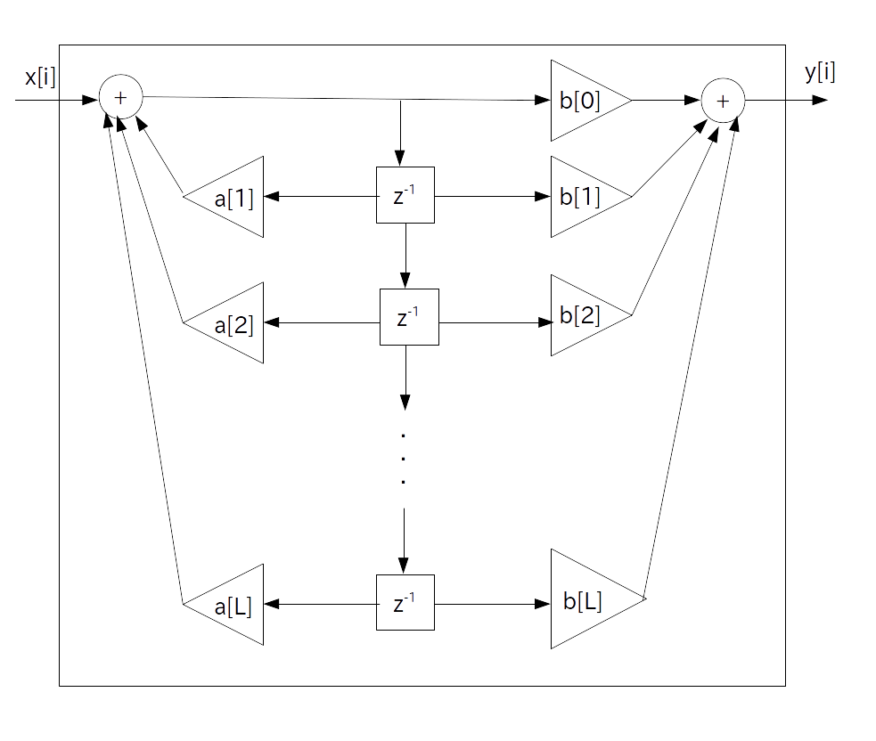

正整数 $\textrm{L}$ を有限の数、$a[i]$ 、$b[i]$を実定数とした時、標準形 IIR フィルタの伝達関数は以下で表される。
\begin{align*} \textrm{H}(z) & = \frac{ \sum_{i=0}^{\textrm{L}} \{ b[i] \cdot z^{-i} \}}{ 1 - \sum_{i=1}^{\textrm{L}} \{ a[i] \cdot z^{-i} \} } \\ & = \frac{ b[0] + b[1] \cdot z^{-1} + b[2] \cdot z^{-2} + \cdots + b[\textrm{L}] \cdot z^{-\textrm{L}} } { 1 - a[1] \cdot z^{-1} - a[2] \cdot z^{-2} + \cdots + a[\textrm{L}] \cdot z^{-\textrm{L}} } \end{align*}
なお実定数 $a[i]$ 、$b[i]$ をIIRフィルタ係数と呼ぶ。
また整数 $\textrm{L}$ を「フィルタ次数」と言う。

x[i] は時刻 i が負の時は 0 とする。
また z[i] を $z^{-i}$ の値とする。
// 前段フィードバック部 z[0] = x[i]; for( j = 1; j <= L; ++j ) z[0] += a[j] * z[j] // 後段フィードフォワード部 y[i] = 0; for( j = 0; j <= L; ++j ) y[i] += b[j] * z[j] // バッファシフト for( j = 1; j <= L; ++j ) z[j] = z[j-1]